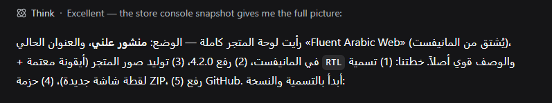
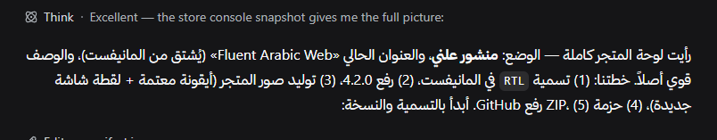
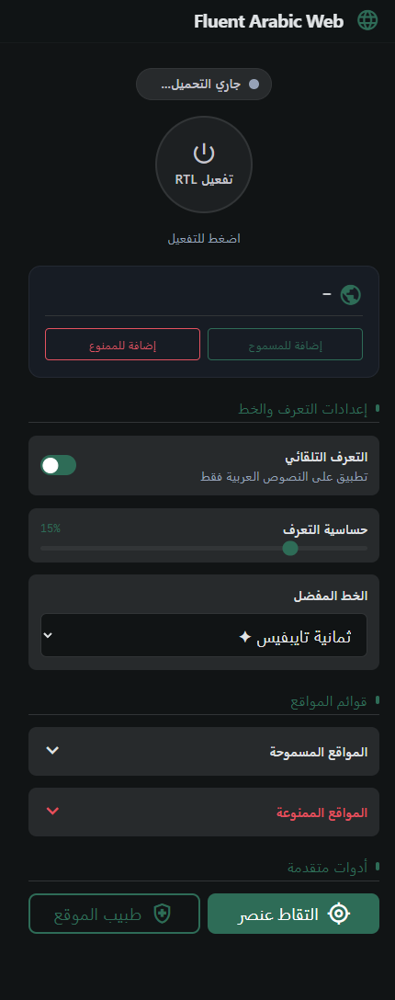
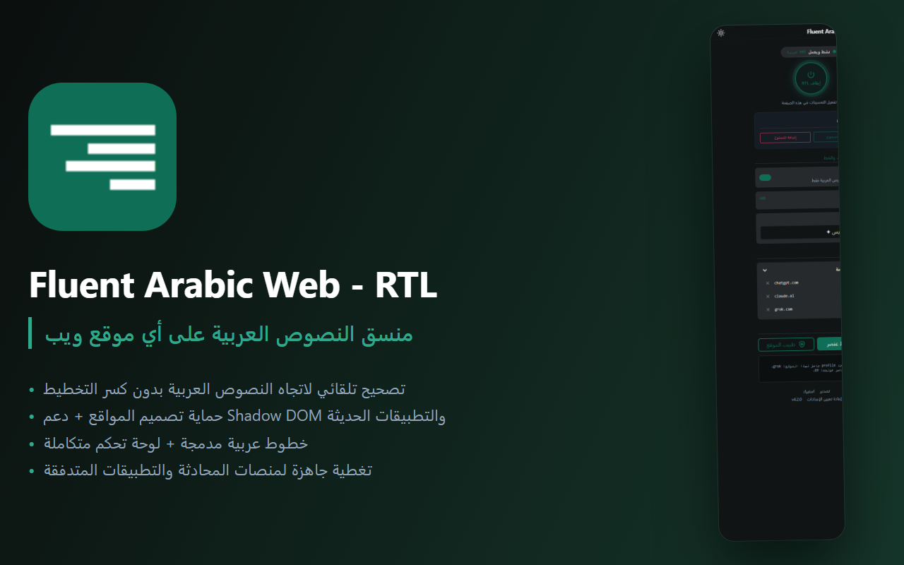

نظام جراحي لعزل اتجاه النصوص،
بلا تخريب لأعمدة الكود أو واجهات المواقع.
الإضافات الساذجة تفرض <body dir="rtl"> على الصفحة كلها، فتنهار شبكات Flexbox وتنعكس أشرطة الأدوات وتتشوّه محاذاة الأكواد. تُعيد Fluent Arabic Web بناء اتجاه العنصر النصّي وحده عبر unicode-bidi: isolate، ويبقى التخطيط كما صمّمه الموقع.
لحلّ الاستثناء ERROR CONST [ERR_MODULE_NOT_FOUND] ثبّت الحزمة PATH src/main.ts ثم استدعِ الدالة FUNCTION createApp() كما في السطر الأخير.
// lib/bidi-fix.js
el.style.unicodeBidi = 'isolate';
el.style.direction = 'rtl';
// الحاوية الأم تُترك كما هي — لا dir على bodyثبّت الحزمة )v3.4( @vue/compiler-sfc ثم استدعِ الدالة )(createApp داخل الملف src/main.ts لحل الاستثناء ! [ERR_MODULE_NOT_FOUND]
)v3.4( انقلب مكانه، وقفزت علامة التعجّب إلى أقصى اليمين.أزمة خلط اللغات في النص العربي المعاصر
الجملة نفسها كما تظهر في ردّ نموذج ذكاء اصطناعي: مصطلحات إنجليزية، أقواس، وأرقام داخل سياق عربي.
الوضع: منشور علني، والعنوان الحالي «Fluent Arabic Web» (مشتق من المانيفست)، والوصف قوي أصلاً. خطتنا: (1) تسمية RTL في المانيفست، (2) رفع الإصدار، (4) حزمة ZIP، (5) رفع GitHub.
الوضع: منشور علني، والعنوان الحالي «Fluent Arabic Web» (مشتق من المانيفست)، والوصف قوي أصلاً. خطتنا: (1) تسمية RTL في المانيفست، (2) رفع الإصدار، (4) حزمة ZIP، (5) رفع GitHub.


بُنيت لمواجهة الفوضى في أعقد تطبيقات الويب
لا استبدال شامل لأنماط CSS، بل مصفاة جراحية داخل شجرة الـ DOM: يُمشى العنصر بعنصر، ويُعزل ما يحمل عربية حقيقية، وتبقى حاويات التخطيط (Flexbox وGrid) على حالها.
دعم البثّ المباشر للأحرف الحيّة
نماذج مثل ChatGPT وClaude تطبع الحروف كلمةً كلمة. المحرّك يراقب التغييرات ويعيد التقييم عند استقرار الدفعة، فلا وميض ولا اهتزاز في الاتجاه أثناء الكتابة.
النفاذ إلى Shadow Root وiframe
رقعة تُزرع في عالم الصفحة لتلحق الجذور المغلقة، فيعمل العزل داخل مكوّنات الويب والإطارات المضمّنة دون تجاوز سياق الأمان.
عتبة عربية قابلة للضبط
لن تُقلب فقرة إنجليزية فيها كلمة عربية يتيمة. الحساب بنسبة محكمة (افتراضياً 15%) تُعدّلها من النافذة المنبثقة متى شئت.
عينات الخطوط العربية
تسعة خطوط مدمجة في الحزمة، وهذه المعاينة تعرضها من ملفاتها نفسها (WOFF2) — تُحقن على النطاق العربي فقط، واللاتيني يبقى لخطّه.
الهندسة المتقنة تصنع الفارق بين الفوضى والوضوح؛ قراءة عربية أصيلة مع احتفاظ الرموز Token_ID #4096 بموضعها ودقّتها.
fonts/*.woff2 مدمجة في الحزمة · ومنسوخة إلى docs/fonts/ للمعاينة
تُحقن على النصوص العربية فقط · 0ms على كود المطوّرين
طبيب الموقع & ملتقط العناصر
صفحة عنيدة أو حاوية نصوص غير قياسية؟ افتح «طبيب الموقع» لفحص نسبة الحروف العربية، واستخرج محدِّد CSS بنقرة، واحفظ الاستثناء على جهازك.
div.comment-body > p:not(.code-block), .markdown-body > blockquote

٢٢ ملفّ موقع جاهز
ملفّات تفهم خصائص كل منصة وحاويات إخراجها، عشرة منها تتعامل مع البثّ الحيّ — بلا ضبط يدوي.
صفر نداءات شبكية.
صفر تتبّع.
بلا خوادم وسيطة.
كل معالجة تجري على جهازك داخل المتصفح: لا نملك خادماً يستقبل نصوصك، ولا نسجّل زيارتك. والشيفرة كلها مفتوحة برخصة MIT — يمكنك تشغيل أمر التدقيق بنفسك.
الصلاحيات: storage · activeTab · وصول للمواقع لأن الإضافة تعمل على أي صفحة تزورها. اقرأ سياسة الخصوصية كاملة.
الأسئلة الشائعة حول آلية العمل
لماذا لا تعتمد الإضافة على body dir="rtl" البسيط؟
هل تنعكس الأكواد والمعادلات؟
<pre> و<code> وصيغ KaTeX ومحرّرات الأكواد، مع قاعدة LTR صارمة تحفظ المسافات البادئة.
هل تؤثّر على سرعة المتصفح؟
بقيت فقرة معوجّة في موقع ما — ماذا أفعل؟
هل ترسل بياناتي إلى أي جهة؟
اقرأ واكتب العربية على الويب كما تستحقّ
إضافة واحدة بحجم صغير، تعمل على Chrome وEdge، بلا حساب وبلا تتبّع — ومعها ٢٢ ملفّ موقع وتسعة خطوط عربية.
